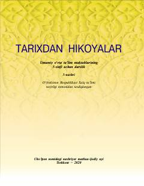

TH5-sinf o‘quvchilari uchun mo‘ljallangan O‘zbekiston tarixi fanidan darslik.
Ushbu darslik umumiy o‘rta ta’lim maktablarining 5-sinf o‘quvchilari uchun mo‘ljallangan bo‘lib, O‘zbekiston tarixining asosiy tushunchalari va o‘tmish voqealarini yoritadi. Kitob tarixiy manbalar, vatanparvarlik va ajdodlarimiz merosi haqida ma’lumot berib, o‘quvchilarda tarixiy xotirani shakllantirishga xizmat qiladi.